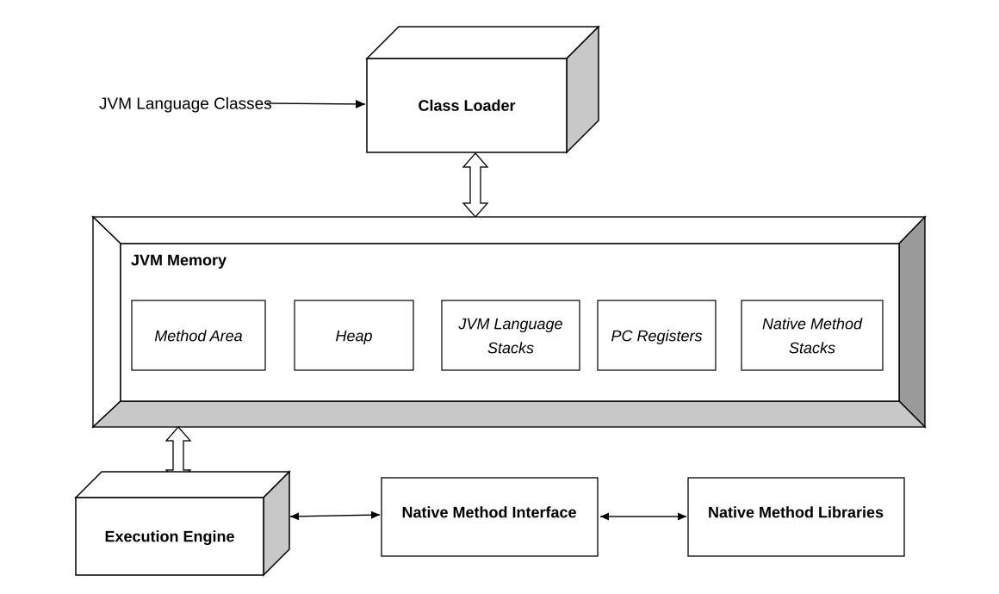
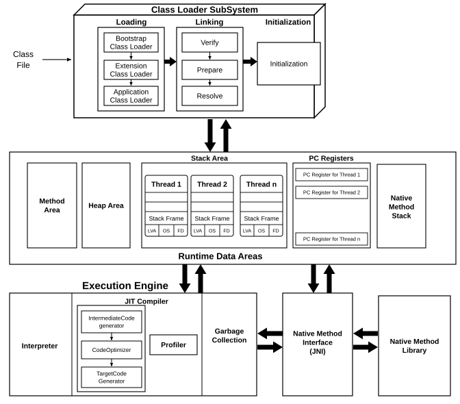
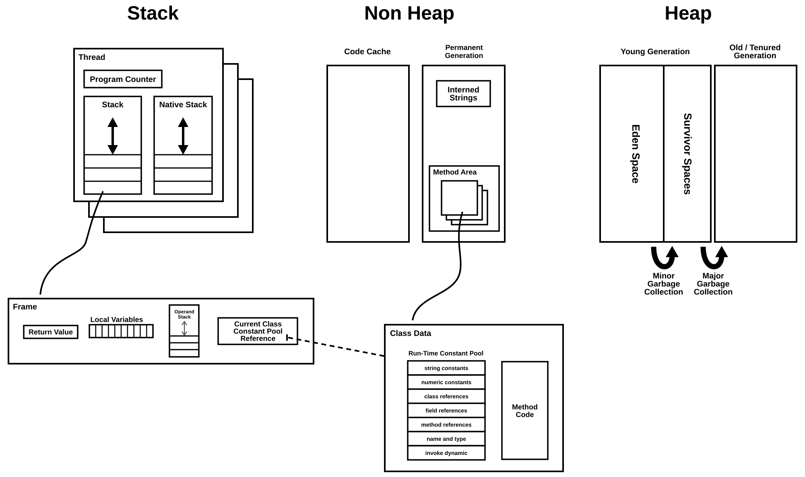

The Java Virtual Machine (JVM) runs compiled bytecode (.class files). It does not care which language produced the bytecode, so Java, Kotlin, Scala and Groovy classes all run on the same JVM. At a high level the JVM has four parts.
Class Loader
Finds .class files, loads them into memory, checks them and prepares them for execution. Classes are loaded lazily, the first time the program needs them.
JVM Memory (Runtime Data Areas)
The memory the JVM uses while a program runs. The method area and the heap are created once when the JVM starts and are shared by all threads. The JVM language stacks, PC registers and native method stacks are created per thread.
Execution Engine
Executes the loaded bytecode. It interprets bytecode, compiles frequently used code to native machine code with the JIT compiler, and frees unused objects with the garbage collector.
Native Method Interface and Native Method Libraries
The Java Native Interface (JNI) lets Java code call native code written in C or C++, and lets native code call back into Java. The native method libraries are the compiled native libraries (.dll or .so files) that hold those native methods.

1. Class Loader Subsystem
A class goes through three phases before it can be used: loading, linking and initialization.
Loading: The class loader reads the bytecode of a class and creates a Class object for it in the method area. There are three built-in class loaders:
java.lang and java.util. It is part of the JVM itself and is written in native code.Class loaders follow the parent delegation model: a loader first asks its parent to load a class and only loads it itself if the parent cannot. This stops application code from replacing core classes such as java.lang.String.
Linking:
VerifyError.0, false or null).Initialization: Static fields get their real values and static initializer blocks run, in the order they appear in the source. This happens once per class, the first time the class is actively used.
2. Runtime Data Areas
StackOverflowError.3. Execution Engine
4. Native Method Interface (JNI) and Native Method Library
The execution engine calls native methods, those declared with the native keyword, through JNI. JNI finds the method in a loaded native method library and runs it on the native method stack. Many core classes, for example parts of java.io and java.lang.Thread, depend on native methods to talk to the operating system.

The diagram groups JVM memory into three regions: per-thread stacks, the non-heap area and the heap.
Stack
Every thread gets its own program counter, Java stack and native stack. Nothing in this region is shared between threads, so it needs no synchronization. Each method call adds a frame to the thread’s stack, containing:
this (for instance methods), the method’s parameters and its local variables. Primitive values are stored directly; objects are stored as references to the heap.The stack size per thread is set with -Xss, for example -Xss1m.
Non Heap
Memory the JVM uses for its own data rather than for application objects.
invokedynamic entries) and the method code (bytecode). Older JVMs also kept interned strings here.The diagram shows the classic layout from before Java 8. In Java 7 interned strings moved to the heap, and in Java 8 the permanent generation was replaced by Metaspace, which lives in native memory and grows as needed. Its size can be capped with -XX:MaxMetaspaceSize.
Heap
All objects live on the heap, which is shared by all threads and managed by the garbage collector. It is split into generations, because most objects die young.
The initial and maximum heap sizes are set with -Xms and -Xmx, for example -Xms512m -Xmx2g. When the heap cannot grow any more and the garbage collector cannot free enough memory, the JVM throws OutOfMemoryError: Java heap space.